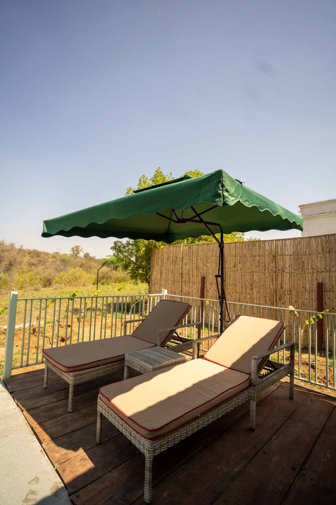
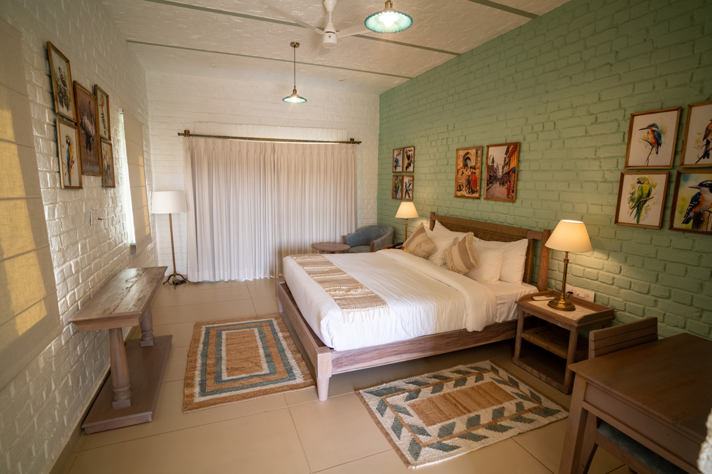

Tiger Safari
Into the reserve at dawn
Private naturalists, silent tracks, and the charged stillness of tiger country.
Kadamb Bagh is imagined as a quiet estate of white-brick arches, lantern-lit courtyards, wilderness trails, private dining groves, and suites that open toward the forest. Mornings begin with birdsong and mist; evenings arrive with bonfires, brass, wild grass, and the hush of Sariska.
Every space is designed to slow time: matte ivory textures, hand-drawn botanical details, Rajputana craft, and cinematic views that make the resort feel less discovered than revealed.
Signature experiences
Private naturalists, silent tracks, and the charged stillness of tiger country.

Firelight, regional recipes, and a table laid where the forest opens.

Slow walks through calls, feathers, and the pale mint light of morning.
Residences of quiet grandeur
Stone, teak, cane, brass, linen, and framed forest views. Each stay is private, textural, and deeply connected to Sariska's moods.
View Stays

“A hidden royal jungle sanctuary where luxury, wildlife, heritage, and silence exist together.”